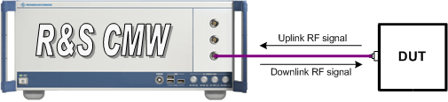

Test Setup for Standard Cell Scenario
The basic test setup for a standard cell scenario uses a bidirectional RF connection. The RF connection is between the tester and the device under test (DUT), carrying both the downlink and the uplink signal:
- The R&S CMW transmits the downlink signal to which the DUT can synchronize to register or attach. The downlink signal is used to transfer signaling messages and user data to the DUT.
- The DUT transmits an uplink signal that the R&S CMW can receive and decode to set up a connection and execute various measurements.
For this setup, the DUT is connected to one of the bidirectional RF COM connectors at the front panel of the R&S CMW. No additional cabling and no external trigger are needed. The input level ranges of all RF COM connectors are identical.
See also: "RF Connectors"

Test setup for standard cell